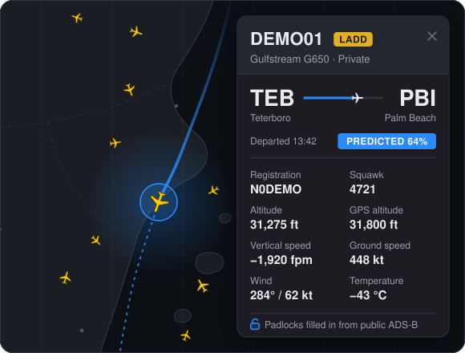

Every blocked flight, named
Anonymous FR24 flights are matched to the transponder they really are. The shared monitor watches FR24's whole map, so flights over oceans, deserts and on the ground are named before you even look.
A browser extension for Flightradar24. It names the flights FR24 hides or shows as "N/A", adds their route, owner and history, plays their flights back in FR24's own player, fills in the figures FR24 keeps behind a padlock and unlocks its locked weather layers and map options, all from public ADS-B and other free public data.

Features
Everything is written into FR24's own data before FR24 draws it, so hidden aircraft look like ordinary traffic, and FR24's own buttons, tables and player do the rest.
Anonymous FR24 flights are matched to the transponder they really are. The shared monitor watches FR24's whole map, so flights over oceans, deserts and on the ground are named before you even look.
The take-off airport comes from the track. The destination is predicted by an explainable engine, with a probability and the reasons. It is only "Confirmed" when the aircraft is lined up on a runway. Flights FR24 shows without a destination get one too, on boards and in Most tracked.
Each blocked aircraft's departures and arrivals are kept for good, with the runway used. They appear in FR24's own "Recent flights", its aircraft pages, search and boards. Older flights are rebuilt under FR24's week too, for any aircraft, as far back as the public record goes.
Press Play on any flight of a log, blocked or older than FR24's 7 days, and it plays at the top of the page in FR24's own player: map, slider, figures and graph. KML and CSV sit beside Play, as on FR24's own rows. How playback works.
Blocked flights on arrival and departure boards worldwide, without false "same-airport" flights from taxiing aircraft, and the runway of every flown row. Movements per day, runway usage, every runway in full and the radio frequencies, where FR24 shows a padlock.
The fields FR24 shows behind padlocks, filled from public ADS-B for any aircraft: vertical speed, squawk, GPS altitude, airspeeds, Mach, wind, temperature and airspace. Where no receiver reports a figure it is worked out from the ones that are. The server and the browser share the polling.
The weather layers (cloud, precipitation, radar, winds, lightning, icing, turbulence, significant weather, AIRMETs and SIGMETs), aeronautical charts, ATC boundaries, oceanic tracks, category filters, up to 60 custom filters, unlimited bookmarks of every kind and the Last clicked flights widget. Built from free public sources, ready on the monitor.
Every aircraft gets an age, and a serial number where the public records have one, from registers and databases. Owners come from public registers, names only. Photos come from JetPhotos and Planespotters, with the photographer credited.
A button on FR24's bottom bar opens a window styled like FR24's own. It holds a switch for every feature, the update button and the data sources, so you keep what you want and leave the rest as FR24 has it.
What's new
The project ships often, and every change is in the changelog. These are the ones you will notice.
Playback
FR24 gives a free account seven days of playback, and plays a hidden flight without a name. The project rebuilds those flights from the positions that were really broadcast, then plays them in the place and the player FR24 uses for its own.
On any row of an aircraft's log, in FR24's own table. Each rebuilt flight has FR24's own Play button, with KML and CSV beside it, exactly as on any other row.
Its own page script requests the flight's track. For a flight only the project knows about, that request is answered inside your browser from the track as kept: the monitor's copy of FR24's own positions, or the public ADS-B record of the day.
The map, the track coloured by altitude, the slider, the figures and the speed and altitude graph appear at the top of the same page. The address gets # and the flight's id, so the link can be shared.
GPS altitude, true and indicated airspeed, vertical speed and squawk are filled for the moment being played. Between two reports up to two minutes apart a figure is taken in proportion; otherwise it comes from the nearer report within a minute. On the ground, or where an aircraft sends none, it reads N/A, as on FR24.
The Playback buttons on the map panel, airport boards, search results and recent flights, and the panel's "playback" link, all open the aircraft's log page at that flight. A board's take-off time plays the flight that took off within three hours of it. A middle or Ctrl click opens it in a new tab.
The files are made from the same track, with FR24's own CSV columns (timestamp, UTC, callsign, position, altitude, speed, direction). A flight with no track anywhere gets FR24's own "not available" message instead of an empty file.
Every position the monitor got from FR24, kept exactly as sent, and the public record of the day (adsb.lol, with airplanes.live filling its holes). The fuller record is used and the other fills its gaps, thinned to about one point every eight seconds in the air, like FR24's own.
The honest limit. A flight needs a track. If no receiver heard it and FR24 has no positions of it, there is nothing to play, and FR24's own message says so. Where coverage had a hole, the track has a gap, as it does on FR24.
How it works
The shared monitor listens all the time and worldwide, which a browser tab cannot do. Your browser reacts instantly to what is on screen, which the server cannot. Together they turn public broadcasts into the blanks FR24 leaves.
ADS-B Out sends identity, position, altitude and speed about twice a second, unencrypted, on 1090 MHz. It is required by law in most controlled airspace.
Thousands of hobbyists' receivers hear it. Community networks (adsb.lol, adsb.fi, airplanes.live, OpenSky) publish it openly, with the day's full traces.
For a hidden or "N/A" flight FR24 sends a position, altitude, speed, track and usually a type, but no callsign or registration.
It scores every aircraft heard nearby against that blank flight and names it only when one is clearly the best match. It then works out the route, the same answer for everyone.
The extension adds the name, route, figures and history to FR24's own data in your tab, before FR24 draws it. Nothing is overlaid.
FR24's own panel, boards, search and player show it as if it had been there all along.

A small always-on server. Every copy of the script uses the shared public one by default.
The extension or userscript, inside the FR24 tab.
FR24 reports a hidden flight with its position, altitude, speed, track and usually its type. The monitor and the browser match it against every aircraft the public networks heard around then:
An aircraft's public track is split into flights at its landings. The engine counts ground reports, slow gaps, final approaches and "lost low beside a field". A hole in coverage counts as a landing only when the aircraft cannot have flown straight through it, and legs split by holes are joined again.
FR24 does not send the figures it padlocks for an aircraft it hides, so they cannot be "unlocked" from FR24. They are filled from other public sources instead:
The engine scores every plausible airport, plus the hypothesis "a local flight returning home", on transparent, weighted evidence:
The result is a probability per airport, with the reasons in the tooltip. "Confirmed" is reserved for an aircraft established on a runway's final approach, which is right 99.8% of the time on held-out data, and otherwise the figure never goes above 99%. Predictions are predictions, and are sometimes wrong. Full details: architecture.
Legal
The project's legal position follows from a few facts about how it works: it receives no radio, it uses only data others have already published, it changes only what your own browser shows, and it picks no lock. Here is the reasoning, one point at a time.
Not legal advice. This is the author's analysis of a personal project, written to explain its design. Laws differ between countries and change. If your situation matters (commercial use, publishing the data, a letter from someone's lawyer), ask a lawyer qualified where you live. The full reasoning is in the legal notes.
Aircraft with ADS-B Out broadcast their identity, position, altitude and speed about twice a second, unencrypted, on 1090 MHz, to anyone in range. That is the point of it: air traffic control, other aircraft and ground stations all rely on it being receivable. In most controlled airspace the broadcast is required by law. Tens of thousands of hobbyists receive it, many feeding Flightradar24 itself.
US: 14 CFR §91.225 and §91.227 · EU: Commission Implementing Regulation (EU) No 1207/2011 · UK: its retained version.
Some owners ask the FAA to limit what it passes to industry about their aircraft. A company that takes the FAA's data agrees to honour that for that data. It is a condition of a data feed. It does not make an aircraft's own broadcast secret, and cannot: the broadcast is required and unencrypted. It binds neither community receivers nor anyone who takes no FAA data.
The FAA recognises the gap. It created temporary privacy addresses, not linked to the owner in the public register, for owners who want to limit identification from the broadcast itself. Flightradar24 hides these aircraft because of its own arrangements: a business decision that binds Flightradar24, not a legal status that binds everyone else. The community networks mark these aircraft with a flag and still publish their positions, under their own terms.
It operates no receiver. It reads positions that community networks have already received and published openly, under their own terms. Rules on who may receive radio messages are aimed at whoever operates a receiver, and this project operates none.
For example, the UK's Wireless Telegraphy Act 2006, s.48.
Aircraft positions, times, routes and runway lengths are facts, and copyright protects expression, not facts. The project copies none of Flightradar24's code, design, text or images: its tables, texts and layouts are its own.
Feist Publications v. Rural Telephone Service, 499 U.S. 340 (1991). The UK and EU reach the same result by requiring originality.
No login, no paywall, no credentials and no paid account: the project uses Flightradar24's public pages and the same unauthenticated requests any visitor's browser makes. Nothing is decrypted. The padlocked figures of a hidden aircraft are not unlocked from Flightradar24 at all, because Flightradar24 never sends them. They are filled from other public sources.
Van Buren v. United States, 593 U.S. 374 (2021); hiQ Labs v. LinkedIn, 31 F.4th 1180 (9th Cir. 2022). Anti-circumvention law protects effective technological measures (17 U.S.C. §1201; Directive 2001/29/EC, Art. 6); the UK's Computer Misuse Act 1990, s.1, turns on unauthorised access.
How a page appears on your own screen is your choice. That is the principle behind ad blockers, reader modes, translation and accessibility tools. Germany's Federal Court of Justice upheld it against a publisher: a tool that helps the user decide what their browser shows is not an unlawful obstruction. This project removes adverts and adds information in the same way, in the browser of the person who installed it, and nowhere else.
BGH, 19 April 2018, I ZR 154/16 (Werbeblocker II).
adsb.lol publishes under the Open Database License, and is credited wherever its data appears. Because the shared monitor is publicly used, it offers the flights it logs under the same licence, a day at a time. Other networks' rate limits are respected, approval-gated APIs are not used, a refusal pauses a source instead of being worked around, and API keys are always the user's own. OurAirports is public domain, OpenStreetMap is credited, and photographs are shown with credit to their photographers.
ODbL 1.0, §4.4 (share-alike). Every source and its terms: data sources.
Owners are looked up in public registers, which publish them so that anyone can see who owns an aircraft. The project reads names only: street addresses are never fetched, stored or shown. In your own browser, personal use falls within the household exemption. The shared monitor is a service, so it names an owner only when the register shows an organisation (a company, trust, bank or club), and withholds the name and the town of a private individual. Positions are not kept against people.
UK and EU GDPR: Article 2(2)(c), the household exemption; Article 6(1)(f), legitimate interests.
"Flightradar24" is used only to say which website the tool works with, which trademark law allows. No logos or get-up are used, nothing implies affiliation, and the footer says plainly that the project is independent of Flightradar24 AB, the FAA and every data provider named here.
Where the limits are. The household exemption ends where personal use ends: using this data to follow, locate or contact a person is never acceptable with this project. What the shared monitor gives your browser is for the tool's own use. Running another public monitor, or publishing what one serves, brings in the ODbL's share-alike terms and the data-protection duties of a service, and the licence requires the author's permission first. Predicted destinations are predictions, identifications can be wrong, and none of it is for navigation, safety, security or any decision with consequences.
Flightradar24
Flightradar24 AB is a Swedish company with real rights over its own website, code and database. None of them reaches a public radio broadcast, or what your own browser does with a page. This is where the line falls.
Names, routes and figures come from broadcasts and from networks that publish them under their own licences. Flightradar24 cannot withdraw them, because it never held them exclusively.
The page is rewritten in your own browser, after Flightradar24 has sent it, for the person who chose to install the extension. That is the same place an ad blocker or translator works.
The extension reads what Flightradar24 sends every visitor's browser for display. The padlocked figures of a hidden aircraft are never sent, so there is nothing to extract: they come from elsewhere.
Every name it finds is shown on Flightradar24's own map, in its own pages, with its own player. It is not a substitute for the service, and it only fills what Flightradar24 leaves empty.
Where the project is least protected, said plainly. The monitor reads Flightradar24's map every two minutes, the same answer every visitor's browser is sent, so that it can name flights from public ADS-B. Flightradar24's terms are unlikely to welcome automated reading of its feed. In the EU and UK the question to weigh is the database right, which protects a maker's investment against a substitute service and not against a tool that sends its users back to the original (CV-Online Latvia v Melons, C-762/19, 2021). Courts are cautious about website terms nobody saw or accepted (Specht v. Netscape, 306 F.3d 17; Nguyen v. Barnes & Noble, 763 F.3d 1171), although EU law lets a site restrict use of a database by contract (Ryanair v PR Aviation, C-30/14).
So the scan is gentle by design, stops at any refusal, never borrows your Flightradar24 identity, and can be switched off. The project is built to work without it, and the browsers do their own scanning if it stops.
Privacy
There are no accounts, cookies, analytics or advertising: not in the extension and not on this site. What the shared monitor needs to answer your map is listed below, and you can turn it off or use your own.
A cache in the browser's own storage so it does not ask twice: aircraft identities and owners, flight logs, learned routes, airport boards and your settings. Any API key you enter yourself is stored there too and sent only to the service it belongs to. Removing the extension, or clearing the site's data, deletes it.
The area your map shows, the aircraft and boards you open, the nameless flights your page shows and the names your browser found for them, owners it looked up in public registers, and the public ADS-B reports it fetched. Most of it is kept without your address, for minutes or days. Your IP address appears in the web server's access log for up to 14 days, and in a one-minute rate limit.
Your Flightradar24 account, cookies, password or e-mail address, anything typed into a page, or Flightradar24's device id for your browser. That id goes only to a monitor of your own, and never an authorisation or a cookie.
So the project knows roughly how many people use it, each install says hello at most once every 12 hours: a random number made by your browser, the version, whether it is the extension or a userscript, the userscript manager, and the browser and system by name only. Nothing about flights, the map or your account. Switch it off with "Count this install (anonymous)" in the LADD Unblock window.
Read the full privacy notice →Turn the monitor off, or use your own →
Data sources
Every source is used within its published terms and limits. Nothing needs approval, a login or a key that you have not entered yourself.
| Source | Used for | Terms and etiquette |
|---|---|---|
| adsb.lol | Live positions, lists of blocked, military and privacy-address aircraft, day traces and the daily archive | Open Database License. At most 20 requests a minute from the monitor, and a pause on any refusal |
| adsb.fi | Backup positions and area lookups | Open data; one request a second |
| OpenSky Network | Backup worldwide positions | Anonymous, non-commercial credits, used sparingly |
| airplanes.live | Public history files for days another network missed | Public files only. Its REST API needs approval, so it is not used |
| TheAirTraffic | Backup positions from its map's public files | Public map files; its query API is not used |
| ADS-B Exchange | Optional backup | Only with your own API key. Its website is never scraped |
| Flightradar24 | The page you are looking at, and the monitor's optional map scan | Public pages and feed, no account, paced, and stopped on any refusal |
| OurAirports | Airfields, runways, radio frequencies | Public domain |
| FAA, UK CAA G-INFO, Isle of Man and Swiss registers; hexdb.io; adsbdb.com | Owner names, registrations, types, ages | Public registers and free public lookups. Names only, never addresses |
| NOAA, EUMETSAT, NASA, RainViewer, Iowa State, Aviation Weather Center, Open-Meteo, Blitzortung | FR24's locked weather layers and the wind figures | Free public sources, credited |
| OpenStreetMap | Names of hospital pads, platforms and estates where helicopters land | ODbL, credited |
| JetPhotos, Planespotters | Aircraft photos | Each photographer's copyright, shown with credit |
Get it
Use one or the other, not both at once. If you switch to the extension, turn the userscript off in your userscript manager.
For Google Chrome, Microsoft Edge and Brave (and other Chromium browsers, version 111 or later).
Get the extension zip from the latest release and unzip it to a folder you'll keep.
Before the first release is tagged, take it from the repository instead.
Open chrome://extensions, switch on Developer mode, click Load unpacked and choose the unzipped folder.
Edge: edge://extensions · Brave: brave://extensions
Open flightradar24.com. That's it: blocked flights appear named, with nothing else to set up.
Firefox on the desktop, version 140 or later, has its own build.
Download the Firefox zip from the latest release. It is the file sent to Firefox Add-ons.
Open about:debugging#/runtime/this-firefox, click Load Temporary Add-on… and choose the zip. Firefox removes a temporary add-on when it restarts.
The userscript works in Firefox too, and stays installed. Installed from Firefox Add-ons, the add-on updates itself.
For any browser with a userscript manager such as Tampermonkey or Violentmonkey, Firefox included.
Install Tampermonkey or Violentmonkey from your browser's add-on store.
Open the userscript. Your userscript manager offers to install it.
If your manager asks you to allow the data hosts, allow them (once each).
Every copy of the script connects to the shared public monitor by default, so it knows every blocked flight worldwide from the moment FR24 opens, along with each aircraft's history. There is nothing to set up.
To turn it off, or point it at your own monitor, open any aircraft's panel, click sources on the strip under the photo, and use the Monitor row, or use the Data sources section of the LADD Unblock window. An address and secret you enter there stay in your browser. Turned off, your browser identifies what it sees on its own.
Your own monitor is a single Node.js program (version 18 or later) with no dependencies. A free Oracle Cloud VM with 1 GB of RAM is enough.
node monitor/monitor.cjs # try it locally: listens on 127.0.0.1:47524
bash monitor/vm-setup.sh # on a server: systemd service, compressed HTTPS via Caddy
bash monitor/deploy.sh # later: update, verify, roll back automatically on failureConfiguration, every endpoint and day-to-day operation: docs/monitor.md. A monitor you make public must offer its derived flights under the ODbL; the legal notes explain why.
Every setting is in one place: click LADD Unblock on FR24's bottom bar, next to Playback (or the version number on the strip under an aircraft's photo). It opens a window like FR24's own Widgets and Weather windows, with:
The switches are kept in your browser only.
When a new version is out, a banner at the top of Flightradar24's map says so. Click Update on it, or in the LADD Unblock window.
A tab opens that puts the new version into the extension's folder for you. It downloads the files from the release, checks each one against the checksum the release lists, replaces the old ones and deletes those the new version no longer has. Then click Refresh page.
The first time, Chrome asks you to choose the folder you unzipped the extension into and to allow it to be edited. Where a browser does not allow that (Brave, for one), the page links the new zip instead: unzip it over the old folder and click Reload extension.
Open the new userscript file again. Tampermonkey and Violentmonkey also check for updates on their own.
Every change is in the changelog, and every tagged version on the Releases page. Firefox Add-ons updates the Firefox add-on by itself.
FAQ
No. It works with a free account or none at all. It uses no paid feature and no one's login: the figures, layers and files come from free public sources.
It is built to be. Aircraft broadcast ADS-B openly, by law. The project uses only data that community networks and public registers already publish. It changes only what your own browser shows you, and it breaks no lock. The reasoning, with its authorities and its limits, is in the legal section and in the legal notes. It is not legal advice.
It cannot make a public broadcast private, control the community networks the names come from, or control what your own browser displays. It can change its website, refuse requests from an address, or end service to an account under its own terms. If it changes its site, a feature may stop until the project is adapted; the extension fails soft and updates follow. The details are here.
Terms of use are a contract between Flightradar24 and its users. Courts are cautious about terms a visitor never saw or accepted, and a breach is usually answered by ending the service to that account, not by control over your browser. The part of the project Flightradar24's terms are least likely to welcome is the monitor's automated reading of its map. That is optional, gentle, stops at any refusal, and the project works without it. If it matters to you, read the section above and decide for yourself.
No. It does not take anything from Flightradar24's servers that is not already sent to every visitor. The padlocked figures of a hidden aircraft are never sent, so they are filled from other public sources, and the weather layers, charts and downloads are made from free public data. Nothing is decrypted and no one's login is used.
Blocked flights have no public flight plan. The destination is worked out from the evidence and shown with its probability. It turns "Confirmed" only on final approach to a runway, which is right 99.8% of the time on held-out data. The tooltip lists the reasons.
Names are accepted only when one aircraft is clearly the best match, and are withdrawn on overwhelming disagreement. Predicted destinations are predictions and are sometimes wrong, which is why they carry a probability. Don't use any of it for navigation, safety, security or any decision with consequences.
Only what it needs to answer your map: the area you view, the aircraft and boards you open, and the names and public ADS-B reports your browser found. It never receives your Flightradar24 account, cookies, password or anything you type. The full list, and how long each part is kept, is in the privacy section and the privacy notice.
It is for personal interest, and must not be used to track, follow, locate or contact anyone. Owners come from public registers, names only and never addresses, and the shared monitor names an owner only when the register shows an organisation.
No. Background work runs in short slices while the browser is idle, and pauses while you drag or zoom the map. Heavy work runs on the monitor, and main-thread stalls are measured on every change to the map path.
No. Every copy connects to the shared public monitor by default. You can turn it off, or use your own instead, in the sources menu or the LADD Unblock window.
The extension carries on by itself, asking adsb.lol and adsb.fi directly. It keeps the last names it was given for six hours.
The extension only rewrites data it recognises and passes everything else through untouched, so a change makes a feature stop rather than the page break. Changes are tested against Flightradar24's own front-end running in Chromium, and when something needs adapting an update follows, announced by the banner on the map.
Chrome, Edge and Brave (and other Chromium browsers, version 111 or later), Firefox 140 or later, and any browser with a userscript manager. It is made for desktop browsers and has not been tested on phones.
Open an issue on GitHub. How to report a security problem, and how secrets and keys are handled, is in SECURITY.md.
Try it
Free, open source and a minute to install. Switch off any feature in one window, or the whole thing, and FR24 is exactly as it was.